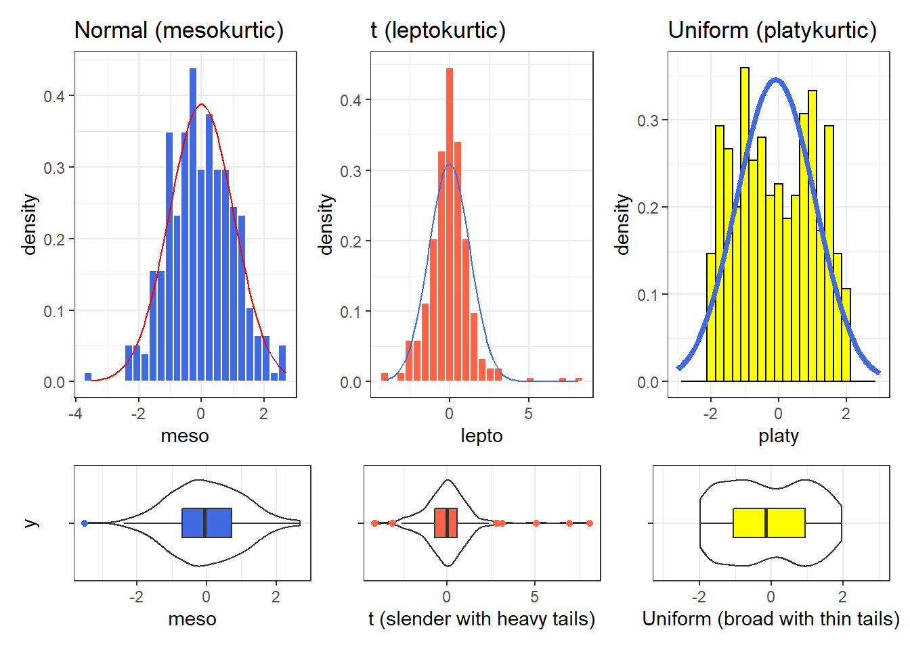

Chapter 5 Summarizing Quantitative Variables
Most numerical summaries that might be new to you are applied most appropriately to quantitative variables. The measures that will interest us relate to:
- the center of our distribution,
- the spread of our distribution, and
- the shape of our distribution.
5.1 The summary function for Quantitative data
R provides a small sampling of numerical summaries with the summary function, for instance.
Age BMI SBP DBP
Min. :21.00 Min. :17.30 Min. : 84.0 Min. : 0.00
1st Qu.:31.00 1st Qu.:23.80 1st Qu.:110.0 1st Qu.: 66.00
Median :42.00 Median :27.50 Median :118.0 Median : 72.00
Mean :41.91 Mean :28.48 Mean :119.2 Mean : 72.13
3rd Qu.:53.00 3rd Qu.:31.60 3rd Qu.:127.0 3rd Qu.: 78.00
Max. :64.00 Max. :63.30 Max. :209.0 Max. :103.00
NA's :5 NA's :15 NA's :15
Pulse
Min. : 40.00
1st Qu.: 64.00
Median : 72.00
Mean : 73.41
3rd Qu.: 82.00
Max. :112.00
NA's :15 This basic summary includes a set of five quantiles4, plus the sample’s mean.
Min.= the minimum value for each variable, so, for example, the youngest subject’s Age was 21.1st Qu.= the first quartile (25th percentile) for each variable - for example, 25% of the subjects were Age 31 or younger.Median= the median (50th percentile) - half of the subjects were Age 42 or younger.Mean= the mean, usually what one means by an average - the sum of the Ages divided by 500 is 41.9,3rd Qu.= the third quartile (75th percentile) - 25% of the subjects were Age 53 or older.Max.= the maximum value for each variable, so the oldest subject was Age 64.
The summary also specifies the number of missing values for each variable. Here, we are missing 5 of the BMI values, for example.
5.2 Measuring the Center of a Distribution
5.2.1 The Mean and The Median
The mean and median are the most commonly used measures of the center of a distribution for a quantitative variable. The median is the more generally useful value, as it is relevant even if the data have a shape that is not symmetric. We might also collect the sum of the observations, and the count of the number of observations, usually symbolized with n.
For variables without missing values, like Age, this is pretty straightforward.
# A tibble: 1 x 4
n Mean Median Sum
<int> <dbl> <dbl> <int>
1 500 41.9 42 20953And again, the Mean is just the Sum (20953), divided by the number of non-missing values of Age (500), or 41.906.
The Median is the middle value when the data are sorted in order. When we have an odd number of values, this is sufficient. When we have an even number, as in this case, we take the mean of the two middle values. We could sort and list all 500 Ages, if we wanted to do so.
# A tibble: 500 x 1
Age
<int>
1 21
2 21
3 21
4 21
5 21
6 21
7 21
8 21
9 22
10 22
# ... with 490 more rowsBut this data set figures we don’t want to output more than 10 observations to a table like this.
If we really want to see all of the data, we can use View(nh_adults) to get a spreadsheet-style presentation, or use the sort command…
[1] 21 21 21 21 21 21 21 21 22 22 22 22 22 22 22 22 22 22 22 22 23 23 23 23 23
[26] 23 23 23 23 23 23 24 24 24 24 24 24 24 24 24 24 24 24 24 24 24 25 25 25 25
[51] 25 25 25 25 25 26 26 26 26 26 26 26 26 26 26 26 26 26 27 27 27 27 27 27 27
[76] 27 27 27 27 27 27 27 27 28 28 28 28 28 28 28 28 28 28 28 28 28 29 29 29 29
[101] 29 29 29 30 30 30 30 30 30 30 30 30 30 30 30 30 30 30 31 31 31 31 31 31 31
[126] 31 31 31 31 31 32 32 32 32 32 32 32 32 32 32 32 32 32 32 33 33 33 33 33 33
[151] 33 33 33 33 33 33 33 34 34 34 34 34 34 34 35 35 35 35 35 35 35 35 35 36 36
[176] 36 36 36 36 36 37 37 37 37 37 37 37 37 37 37 37 37 37 37 37 37 37 37 38 38
[201] 38 38 38 38 38 38 38 38 38 38 39 39 39 39 39 39 39 39 39 39 39 39 39 40 40
[226] 40 40 40 40 40 40 40 40 40 41 41 41 41 41 41 41 41 41 41 41 41 42 42 42 42
[251] 42 42 42 42 42 42 42 42 43 43 43 43 43 43 43 43 43 43 43 43 43 43 43 44 44
[276] 44 44 44 44 44 44 44 44 44 45 45 45 45 45 45 45 45 45 45 45 45 45 45 45 46
[301] 46 46 46 46 46 46 47 47 47 47 47 47 47 47 47 47 48 48 48 48 48 48 49 49 49
[326] 49 49 49 49 49 49 49 49 49 49 49 49 49 49 50 50 50 50 50 50 50 50 50 50 50
[351] 50 50 50 50 51 51 51 51 51 51 51 51 51 52 52 52 52 52 52 52 52 53 53 53 53
[376] 53 53 53 53 53 53 53 53 53 53 54 54 54 54 54 54 54 54 54 54 54 54 55 55 55
[401] 55 55 55 55 55 55 55 55 56 56 56 56 56 56 56 56 56 56 56 56 56 56 56 57 57
[426] 57 57 57 57 57 57 57 57 57 58 58 58 58 58 58 58 58 58 59 59 59 59 59 59 59
[451] 59 59 59 59 59 59 59 59 60 60 60 60 60 60 60 60 60 60 60 61 61 61 61 61 61
[476] 61 61 61 61 61 62 62 62 62 62 63 63 63 63 63 63 63 63 64 64 64 64 64 64 64Again, to find the median, we would take the mean of the middle two observations in this sorted data set. That would be the 250th and 251st largest Ages.
[1] 42 425.2.2 Dealing with Missingness
When calculating a mean, you may be tempted to try something like this…
# A tibble: 1 x 2
`mean(Pulse)` `median(Pulse)`
<dbl> <int>
1 NA NAThis fails because we have some missing values in the Pulse data. We can address this by either omitting the data with missing values before we run the summarise function, or tell the mean and median summary functions to remove missing values5.
# A tibble: 1 x 3
count `mean(Pulse)` `median(Pulse)`
<int> <dbl> <int>
1 485 73.4 72Or, we could tell the summary functions themselves to remove NA values.
# A tibble: 1 x 2
`mean(Pulse, na.rm = TRUE)` `median(Pulse, na.rm = TRUE)`
<dbl> <int>
1 73.4 72While we eventually discuss the importance of imputation when dealing with missing data, this doesn’t apply to providing descriptive summaries of actual, observed values.
5.2.3 The Mode of a Quantitative Variable
One other less common measure of the center of a quantitative variable’s distribution is its most frequently observed value, referred to as the mode. This measure is only appropriate for discrete variables, be they quantitative or categorical. To find the mode, we usually tabulate the data, and then sort by the counts of the numbers of observations.
`summarise()` ungrouping output (override with `.groups` argument)# A tibble: 44 x 2
Age count
<int> <int>
1 37 18
2 49 17
3 24 15
4 27 15
5 30 15
6 43 15
7 45 15
8 50 15
9 56 15
10 59 15
# ... with 34 more rowsNote the use of three different “verbs” in our function there - for more explanation of this strategy, visit Grolemund and Wickham (2019).
As an alternative, the modeest package’s mfv function calculates the sample mode (or most frequent value).6
5.3 Measuring the Spread of a Distribution
Statistics is all about variation, so spread or dispersion is an important fundamental concept in statistics. Measures of spread like the inter-quartile range and range (maximum - minimum) can help us understand and compare data sets. If the values in the data are close to the center, the spread will be small. If many of the values in the data are scattered far away from the center, the spread will be large.
5.3.1 The Range and the Interquartile Range (IQR)
The range of a quantitative variable is sometimes interpreted as the difference between the maximum and the minimum, even though R presents the actual minimum and maximum values when you ask for a range…
[1] 21 64And, for a variable with missing values, we can use…
[1] 17.3 63.3A more interesting and useful statistic is the inter-quartile range, or IQR, which is the range of the middle half of the distribution, calculated by subtracting the 25th percentile value from the 75th percentile value.
# A tibble: 1 x 3
`IQR(Age)` `quantile(Age, 0.25)` `quantile(Age, 0.75)`
<dbl> <dbl> <dbl>
1 22 31 53We can calculate the range and IQR nicely from the summary information on quantiles, of course:
Age BMI SBP DBP
Min. :21.00 Min. :17.30 Min. : 84.0 Min. : 0.00
1st Qu.:31.00 1st Qu.:23.80 1st Qu.:110.0 1st Qu.: 66.00
Median :42.00 Median :27.50 Median :118.0 Median : 72.00
Mean :41.91 Mean :28.48 Mean :119.2 Mean : 72.13
3rd Qu.:53.00 3rd Qu.:31.60 3rd Qu.:127.0 3rd Qu.: 78.00
Max. :64.00 Max. :63.30 Max. :209.0 Max. :103.00
NA's :5 NA's :15 NA's :15
Pulse
Min. : 40.00
1st Qu.: 64.00
Median : 72.00
Mean : 73.41
3rd Qu.: 82.00
Max. :112.00
NA's :15 5.3.2 The Variance and the Standard Deviation
The IQR is always a reasonable summary of spread, just as the median is always a reasonable summary of the center of a distribution. Yet, most people are inclined to summarise a batch of data using two numbers: the mean and the standard deviation. This is really only a sensible thing to do if you are willing to assume the data follow a Normal distribution: a bell-shaped, symmetric distribution without substantial outliers.
But most data do not (even approximately) follow a Normal distribution. Summarizing by the median and quartiles (25th and 75th percentiles) is much more robust, explaining R’s emphasis on them.
5.3.3 Obtaining the Variance and Standard Deviation in R
Here are the variances of the quantitative variables in the nh_adults data. Note the need to include na.rm = TRUE to deal with the missing values in some variables.
# A tibble: 1 x 5
Age BMI SBP DBP Pulse
<dbl> <dbl> <dbl> <dbl> <dbl>
1 152. 39.7 233. 123. 144.And here are the standard deviations of those same variables.
# A tibble: 1 x 5
Age BMI SBP DBP Pulse
<dbl> <dbl> <dbl> <dbl> <dbl>
1 12.3 6.30 15.3 11.1 12.05.3.4 Defining the Variance and Standard Deviation
Bock, Velleman, and De Veaux (2004) have lots of useful thoughts here, which are lightly edited here.
In thinking about spread, we might consider how far each data value is from the mean. Such a difference is called a deviation. We could just average the deviations, but the positive and negative differences always cancel out, leaving an average deviation of zero, so that’s not helpful. Instead, we square each deviation to obtain non-negative values, and to emphasize larger differences. When we add up these squared deviations and find their mean (almost), this yields the variance.
\[ \mbox{Variance} = s^2 = \frac{\Sigma (y - \bar{y})^2}{n-1} \]
Why almost? It would be the mean of the squared deviations only if we divided the sum by \(n\), but instead we divide by \(n-1\) because doing so produces an estimate of the true (population) variance that is unbiased7. If you’re looking for a more intuitive explanation, this Stack Exchange link awaits your attention.
- To return to the original units of measurement, we take the square root of \(s^2\), and instead work with \(s\), the standard deviation, also abbreviated SD.
\[ \mbox{Standard Deviation} = s = \sqrt{\frac{\Sigma (y - \bar{y})^2}{n-1}} \]
5.3.5 Interpreting the SD when the data are Normally distributed
For a set of measurements that follow a Normal distribution, the interval:
- Mean \(\pm\) Standard Deviation contains approximately 68% of the measurements;
- Mean \(\pm\) 2(Standard Deviation) contains approximately 95% of the measurements;
- Mean \(\pm\) 3(Standard Deviation) contains approximately all (99.7%) of the measurements.
We often refer to the population or process mean of a distribution with \(\mu\) and the standard deviation with \(\sigma\), leading to the Figure below.

Figure 5.1: The Normal Distribution and the Empirical Rule
But if the data are not from an approximately Normal distribution, then this Empirical Rule is less helpful.
5.3.6 Chebyshev’s Inequality: One Interpretation of the Standard Deviation
Chebyshev’s Inequality tells us that for any distribution, regardless of its relationship to a Normal distribution, no more than 1/k2 of the distribution’s values can lie more than k standard deviations from the mean. This implies, for instance, that for any distribution, at least 75% of the values must lie within two standard deviations of the mean, and at least 89% must lie within three standard deviations of the mean.
Again, most data sets do not follow a Normal distribution. We’ll return to this notion soon. But first, let’s try to draw some pictures that let us get a better understanding of the distribution of our data.
5.4 Measuring the Shape of a Distribution
When considering the shape of a distribution, one is often interested in three key points.
- The number of modes in the distribution, which I always assess through plotting the data.
- The skewness, or symmetry that is present, which I typically assess by looking at a plot of the distribution of the data, but if required to, will summarise with a non-parametric measure of skewness.
- The kurtosis, or heavy-tailedness (outlier-proneness) that is present, usually in comparison to a Normal distribution. Again, this is something I nearly inevitably assess graphically, but there are measures.
A Normal distribution has a single mode, is symmetric and, naturally, is neither heavy-tailed nor light-tailed as compared to a Normal distribution (we call this mesokurtic).
5.4.1 Multimodal vs. Unimodal distributions
A unimodal distribution, on some level, is straightforward. It is a distribution with a single mode, or “peak” in the distribution. Such a distribution may be skewed or symmetric, light-tailed or heavy-tailed. We usually describe as multimodal distributions like the two on the right below, which have multiple local maxima, even though they have just a single global maximum peak.

Figure 5.2: Unimodal and Multimodal Sketches
Truly multimodal distributions are usually described that way in terms of shape. For unimodal distributions, skewness and kurtosis become useful ideas.
5.4.2 Skew
Whether or not a distribution is approximately symmetric is an important consideration in describing its shape. Graphical assessments are always most useful in this setting, particularly for unimodal data. My favorite measure of skew, or skewness if the data have a single mode, is:
\[ skew_1 = \frac{\mbox{mean} - \mbox{median}}{\mbox{standard deviation}} \]
- Symmetric distributions generally show values of \(skew_1\) near zero. If the distribution is actually symmetric, the mean should be equal to the median.
- Distributions with \(skew_1\) values above 0.2 in absolute value generally indicate meaningful skew.
- Positive skew (mean > median if the data are unimodal) is also referred to as right skew.
- Negative skew (mean < median if the data are unimodal) is referred to as left skew.

Figure 5.3: Negative (Left) Skew and Positive (Right) Skew
5.4.3 Kurtosis
When we have a unimodal distribution that is symmetric, we will often be interested in the behavior of the tails of the distribution, as compared to a Normal distribution with the same mean and standard deviation. High values of kurtosis measures (and there are several) indicate data which has extreme outliers, or is heavy-tailed.
- A mesokurtic distribution has similar tail behavior to what we would expect from a Normal distribution.
- A leptokurtic distribution is a thinner, more slender distribution, with heavier tails than we’d expect from a Normal distribution. One example is the t distribution.
- A platykurtic distribution is a broader, flatter distribution, with thinner tails than we’d expect from a Normal distribution. One example is a uniform distribution.
set.seed(431)
sims_kurt <- tibble(meso = rnorm(n = 300, mean = 0, sd = 1),
lepto = rt(n = 300, df = 4),
platy = runif(n = 300, min = -2, max = 2))
p1 <- ggplot(sims_kurt, aes(x = meso)) +
geom_histogram(aes(y = stat(density)),
bins = 25, fill = "royalblue", col = "white") +
stat_function(fun = dnorm,
args = list(mean = mean(sims_kurt$meso),
sd = sd(sims_kurt$meso)),
col = "red") +
labs(title = "Normal (mesokurtic)")
p1a <- ggplot(sims_kurt, aes(x = meso, y = "")) +
geom_violin() +
geom_boxplot(fill = "royalblue", outlier.color = "royalblue", width = 0.3)
p2 <- ggplot(sims_kurt, aes(x = lepto)) +
geom_histogram(aes(y = stat(density)),
bins = 25, fill = "tomato", col = "white") +
stat_function(fun = dnorm,
args = list(mean = mean(sims_kurt$lepto),
sd = sd(sims_kurt$lepto)),
col = "royalblue") +
labs(title = "t (leptokurtic)")
p2a <- ggplot(sims_kurt, aes(x = lepto, y = "")) +
geom_violin() +
geom_boxplot(fill = "tomato", outlier.color = "tomato", width = 0.3) +
labs(y = "", x = "t (slender with heavy tails)")
p3 <- ggplot(sims_kurt, aes(x = platy)) +
geom_histogram(aes(y = stat(density)),
bins = 25, fill = "yellow", col = "black") +
stat_function(fun = dnorm,
args = list(mean = mean(sims_kurt$platy),
sd = sd(sims_kurt$platy)),
col = "royalblue", lwd = 1.5) +
xlim(-3, 3) +
labs(title = "Uniform (platykurtic)")
p3a <- ggplot(sims_kurt, aes(x = platy, y = "")) +
geom_violin() +
geom_boxplot(fill = "yellow", width = 0.3) +
xlim(-3, 3) +
labs(y = "", x = "Uniform (broad with thin tails)")
(p1 + p2 + p3) / (p1a + p2a + p3a) +
plot_layout(heights = c(3, 1))Warning: Removed 2 rows containing missing values (geom_bar).
Graphical tools are in most cases the best way to identify issues related to kurtosis.
5.5 More Detailed Numerical Summaries for Quantitative Variables
5.5.1 favstats in the mosaic package
The favstats function adds the standard deviation, and counts of overall and missing observations to our usual summary for a continuous variable. Let’s look at systolic blood pressure, because we haven’t yet.
Registered S3 method overwritten by 'mosaic':
method from
fortify.SpatialPolygonsDataFrame ggplot2 min Q1 median Q3 max mean sd n missing
84 110 118 127 209 119.2495 15.25735 485 15We could, of course, duplicate these results with a rather lengthy set of summarise pieces…
nh_adults %>%
filter(complete.cases(SBP)) %>%
summarise(min = min(SBP), Q1 = quantile(SBP, 0.25), median = median(SBP),
Q3 = quantile(SBP, 0.75), max = max(SBP),
mean = mean(SBP), sd = sd(SBP), n = n(), missing = sum(is.na(SBP)))# A tibble: 1 x 9
min Q1 median Q3 max mean sd n missing
<int> <dbl> <int> <dbl> <int> <dbl> <dbl> <int> <int>
1 84 110 118 127 209 119. 15.3 485 0The somewhat unusual structure of favstats (complete with an easy to forget ~) is actually helpful. It allows you to look at some interesting grouping approaches, like this:
Education min Q1 median Q3 max mean sd n missing
1 8th Grade 95 114 122 131.50 167 123.7273 18.86085 22 2
2 9 - 11th Grade 92 108 114 125.25 170 117.3833 13.66189 60 0
3 High School 91 112 119 129.00 209 122.6104 19.68111 77 4
4 Some College 85 110 119 128.00 165 119.1812 13.52778 149 4
5 College Grad 84 109 118 126.00 171 117.9209 14.26831 177 5Of course, we could accomplish the same comparison with dplyr commands, too, but the favstats approach has much to offer.
nh_adults %>%
filter(complete.cases(SBP, Education)) %>%
group_by(Education) %>%
summarise(min = min(SBP), Q1 = quantile(SBP, 0.25), median = median(SBP),
Q3 = quantile(SBP, 0.75), max = max(SBP),
mean = mean(SBP), sd = sd(SBP), n = n(), missing = sum(is.na(SBP)))`summarise()` ungrouping output (override with `.groups` argument)# A tibble: 5 x 10
Education min Q1 median Q3 max mean sd n missing
<fct> <int> <dbl> <dbl> <dbl> <int> <dbl> <dbl> <int> <int>
1 8th Grade 95 114 122 132. 167 124. 18.9 22 0
2 9 - 11th Grade 92 108 114 125. 170 117. 13.7 60 0
3 High School 91 112 119 129 209 123. 19.7 77 0
4 Some College 85 110 119 128 165 119. 13.5 149 0
5 College Grad 84 109 118 126 171 118. 14.3 177 05.5.2 describe in the psych package
The psych package has a more detailed list of numerical summaries for quantitative variables that lets us look at a group of observations at once.
vars n mean sd median trimmed mad min max range skew
Age 1 500 41.91 12.35 42.0 41.86 16.31 21.0 64.0 43 0.03
BMI 2 495 28.48 6.30 27.5 27.80 5.63 17.3 63.3 46 1.35
SBP 3 485 119.25 15.26 118.0 118.25 13.34 84.0 209.0 125 1.27
DBP 4 485 72.13 11.10 72.0 72.33 8.90 0.0 103.0 103 -0.58
Pulse 5 485 73.41 12.01 72.0 73.01 11.86 40.0 112.0 72 0.30
kurtosis se
Age -1.20 0.55
BMI 3.32 0.28
SBP 4.63 0.69
DBP 3.58 0.50
Pulse 0.15 0.55The additional statistics presented here are:
trimmed= a trimmed mean (by default in this function, this removes the top and bottom 10% from the data, then computes the mean of the remaining values - the middle 80% of the full data set.)mad= the median absolute deviation (from the median), which can be used in a manner similar to the standard deviation or IQR to measure spread.- If the data are \(Y_1, Y_2, ..., Y_n\), then the
madis defined as \(median(|Y_i - median(Y_i)|)\). - To find the
madfor a set of numbers, find the median, subtract the median from each value and find the absolute value of that difference, and then find the median of those absolute differences. - For non-normal data with a skewed shape but tails well approximated by the Normal, the
madis likely to be a better (more robust) estimate of the spread than is the standard deviation.
- If the data are \(Y_1, Y_2, ..., Y_n\), then the
- a measure of
skew, which refers to how much asymmetry is present in the shape of the distribution. The measure is not the same as the nonparametric skew measure that we will usually prefer. The [Wikipedia page on skewness][https://en.wikipedia.org/wiki/Skewness] is very detailed. - a measure of excess
kurtosis, which refers to how outlier-prone, or heavy-tailed the shape of the distribution is, as compared to a Normal distribution. se= the standard error of the sample mean, equal to the sample sd divided by the square root of the sample size.
5.5.3 The Hmisc package’s version of describe
nh_adults %>% select(Age, BMI, SBP, DBP, Pulse)
5 Variables 500 Observations
--------------------------------------------------------------------------------
Age
n missing distinct Info Mean Gmd .05 .10
500 0 44 0.999 41.91 14.27 23 25
.25 .50 .75 .90 .95
31 42 53 59 61
lowest : 21 22 23 24 25, highest: 60 61 62 63 64
--------------------------------------------------------------------------------
BMI
n missing distinct Info Mean Gmd .05 .10
495 5 198 1 28.48 6.704 20.70 21.90
.25 .50 .75 .90 .95
23.80 27.50 31.60 35.68 41.00
lowest : 17.3 17.8 18.2 18.3 18.4, highest: 47.7 54.1 54.4 56.8 63.3
--------------------------------------------------------------------------------
SBP
n missing distinct Info Mean Gmd .05 .10
485 15 73 0.999 119.2 16.18 98 102
.25 .50 .75 .90 .95
110 118 127 137 143
lowest : 84 85 91 92 93, highest: 170 171 182 202 209
--------------------------------------------------------------------------------
DBP
n missing distinct Info Mean Gmd .05 .10
485 15 61 0.999 72.13 12.02 54.0 58.0
.25 .50 .75 .90 .95
66.0 72.0 78.0 85.6 89.0
lowest : 0 41 42 44 45, highest: 98 99 100 102 103
--------------------------------------------------------------------------------
Pulse
n missing distinct Info Mean Gmd .05 .10
485 15 35 0.997 73.41 13.47 54.4 60.0
.25 .50 .75 .90 .95
64.0 72.0 82.0 88.0 94.0
lowest : 40 44 48 50 52, highest: 104 106 108 110 112
--------------------------------------------------------------------------------The Hmisc package’s version of describe for a distribution of data presents three new ideas, in addition to a more comprehensive list of quartiles (the 5th, 10th, 25th, 50th, 75th, 90th and 95th are shown) and the lowest and highest few observations. These are:
distinct- the number of different values observed in the data.Info- a measure of how “continuous” the variable is, related to how many “ties” there are in the data, with Info taking a higher value (closer to its maximum of one) if the data are more continuous.Gmd- the Gini mean difference - a robust measure of spread that is calculated as the mean absolute difference between any pairs of observations. Larger values of Gmd indicate more spread-out distributions.
5.5.4 Other options
The package summarytools has a function called dfSummary which I like and Dominic Comtois has also published Recommendations for Using summarytools with R Markdown. Note that this isn’t really for Word documents.
The naniar package is helpful for wrangling and visualizing missing values, and checking imputations.
DataExplorer can be used for more automated exploratory data analyses (and some people also like skimr) and visdat, as well.
References
Bock, David E., Paul F. Velleman, and Richard D. De Veaux. 2004. Stats: Modelling the World. Boston MA: Pearson Addison-Wesley.
Grolemund, Garrett, and Hadley Wickham. 2019. R for Data Science. O’Reilly. http://r4ds.had.co.nz/.
The quantiles (sometimes referred to as percentiles) can also be summarised with a boxplot.↩︎
We could also use
!is.nain place ofcomplete.casesto accomplish the same thing.↩︎See the documentation for the
modeestpackage’smlvfunction to look at other definitions of the mode.↩︎When we divide by n-1 as we calculate the sample variance, the average of the sample variances for all possible samples is equal to the population variance. If we instead divided by n, the average sample variance across all possible samples would be a little smaller than the population variance.↩︎